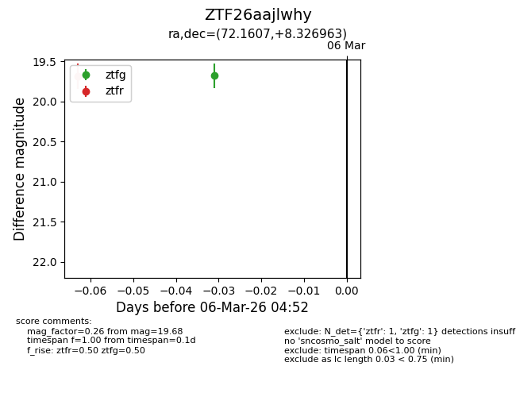
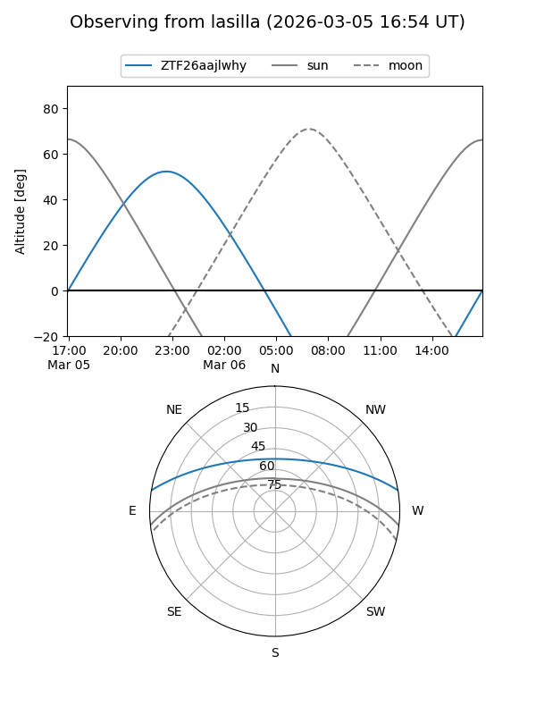
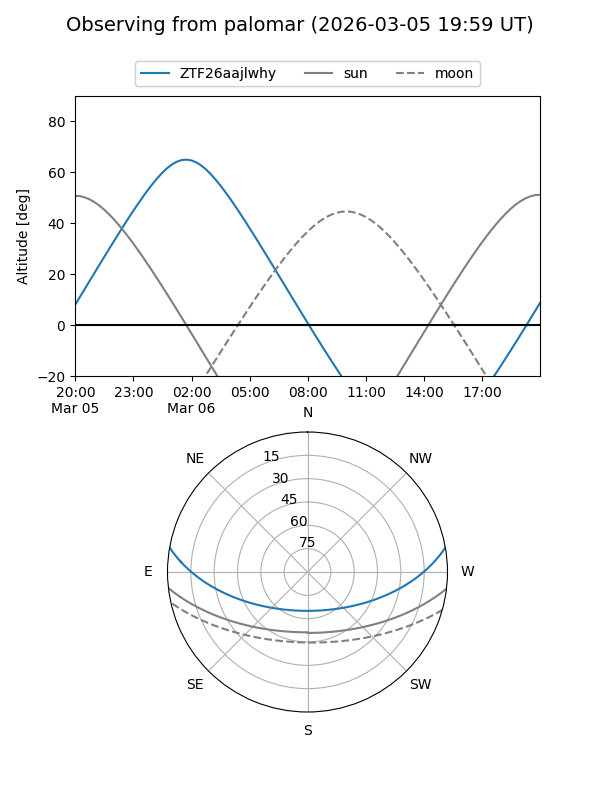

ZTF26aajlwhy
Target ZTF26aajlwhy at 2026-03-06 04:54
Aliases and brokers:
FINK: link
Lasair: link
ALeRCE: link
alt names
ZTF26aajlwhy (ztf,fink_ztf)
Coordinates:
equatorial (ra, dec) = 72.1607,+8.32696
equatorial (HMS+DMS) = 04:48:38.56,+08:19:37.07
galactic (l, b) = (190.0413,-22.55282)
Flags:
Photometry:
last ztfg=19.68, ztfr=19.69
1 ztfg, 1 ztfr detections
Lightcurve

Visibility


Additional plots